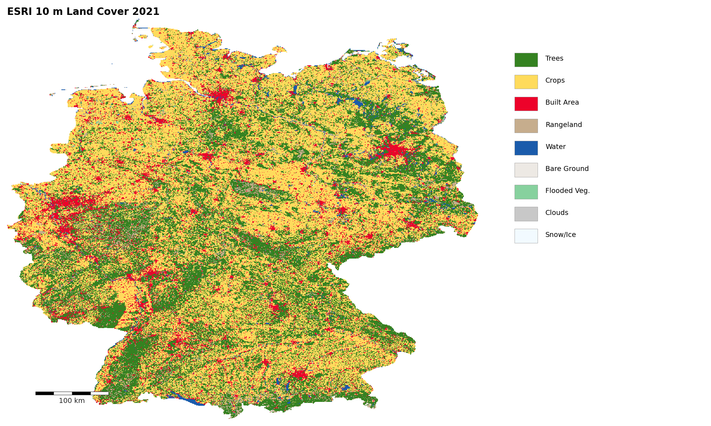
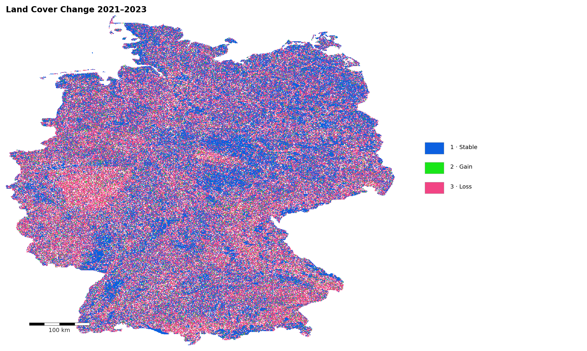
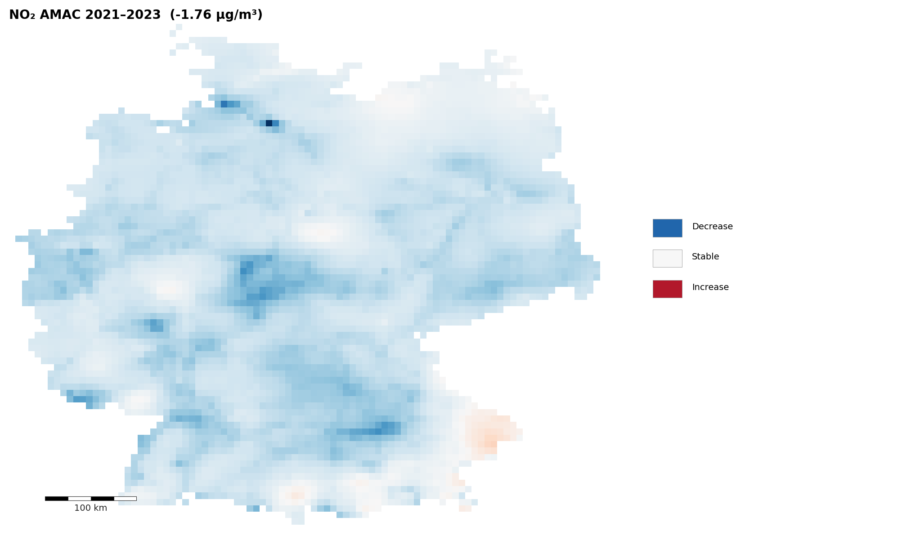
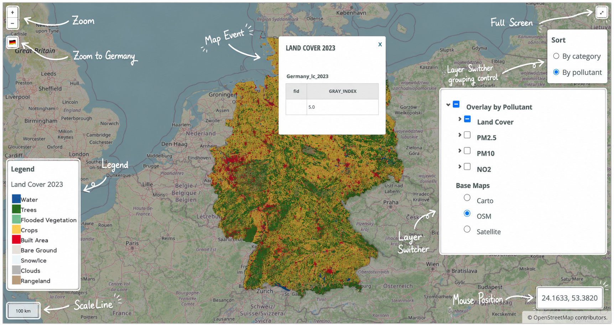

From GIS processing to WebGIS results
Germany case study using CAMS air quality reanalysis, ESRI 10 m Annual Land Cover, WorldPop population, and GAUL Level 2 administrative boundaries
All datasets were reprojected to WGS84 (EPSG:4326), clipped to Germany, classified, summarised with zonal statistics, and prepared for web publication. The WebGIS supports map interpretation through multiple basemaps, map controls, pollutant layers, pollutant-population exposure layers, and legends.
Overview

Data sources
CAMS European air quality reanalysis (NO₂, PM₂.₅, PM₁₀), ESRI 10 m Annual Land Cover (2021 & 2023), WorldPop Population Counts (2023, 100 m), and GAUL Level 2 administrative boundaries. All layers reprojected to WGS84 (EPSG:4326) and clipped to Germany.

Processing workflow
Step 1–2: pollutant monthly & annual average maps. Step 3: concentration maps by EU thresholds. Step 4: Annual Mean Aggregation Change (AMAC, 2021−2023). Step 5: Land Cover Change detection (LCC) with Stability, Gain, and Loss. Step 6: zonal statistics (Mean, Min, Max; prefix Zone_). Step 7–8: pollutant-population exposure and WebGIS.

Main results
AMAC 2021→2023: NO₂ −1.765, PM₂.₅ −1.229, PM₁₀ −1.657 µg/m³. All transition zones (Stable, Gain, Loss) show negative mean values for Built Area (NO₂), Crops (PM₂.₅), and Trees (PM₁₀). Pollutant-population maps combine pollutant concentration classes with population exposure classes across GAUL Level 2 districts.

WebGIS output
Interactive WebGIS with OpenStreetMap & CARTO Positron basemaps, pollutant AMAC overlay, pollutant-population exposure layer (GAUL Level 2 districts), land-cover transition zones, scale bar, fullscreen, mouse position, layer switcher, zoom to Germany and colour legends.